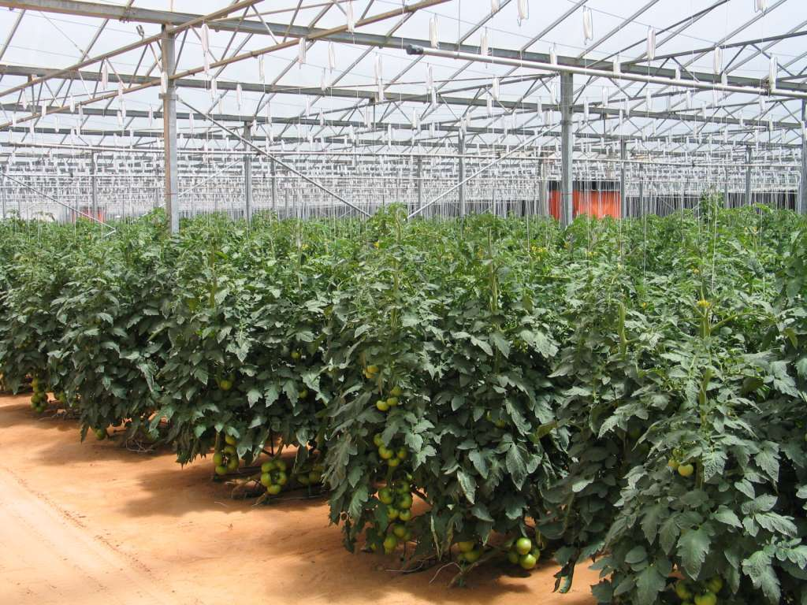

Jordanian Crops & Agriculture
Discover the diversity of crops grown across Jordan, including fruits, vegetables, herbs, and grains. Explore planting seasons, yields, and market information, and find which crops thrive in your region.
Discover the diversity of crops grown across Jordan, including fruits, vegetables, herbs, and grains. Explore planting seasons, yields, and market information, and find which crops thrive in your region.